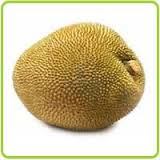
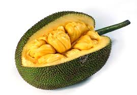
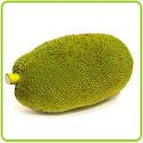
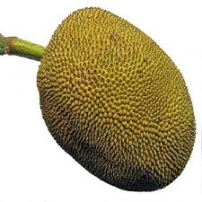
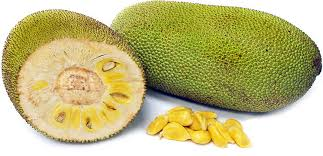
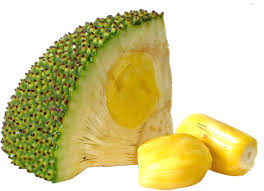

|  |
The Cheena has an exotic fruit, tree with an Open, low and spreading growth habit and can be maintained at a height and spread of 2.5 m with annual pruning. 'Cheena' can always produce 50 to 70 kg per tree. The fruit are long, narrow and uniform in size and shape. The skin is green, with blunt spines which become yellow and open slightly leading maturity. Fruit are small, and weigh around 2.4 kg and they have an edible flesh percentage of 33%. The flesh is deep orange, soft and fairly fibrous, with an excellent flavor. The fruit has an intense, earthy aroma. Fruit preparation time can be less as 15 minutes, compared to the 1 to 2 hours required for other cultivars. |
|  |
The Black Gold is an energetic jackfruit, with a dense and highly manageable awning. With annual prune the tree is easily maintained at a height and spread of 2 to 2.5 m with reliable, heavy production of 55 to 90 kg per tree. The fruit are medium in size, averaging of 6.7 kg, with an edible flesh percentage of 35% for each. The exterior of the fruit is dark green in colour and has sharp fleshy spine. The spines always have a zig-zag it is very difficult to judge the proper harvest time and maturity. The deep orange flesh is soft, with a strong, sweet flavor and aroma. The flesh is removed easily from the fruit compared with other cultivars. |
|  |
The Cochin Fruit is small and smooth in nature. The tree is low in energy and forms a sparse, upright and narrow awning. The tree can be maintained at a height between 2 and 2.5 m and a spread of 1.5 m with light annual pruning. The fruit are small and smooth in comparison with other cultivars because the spines squash and fruit opens when matured. Fruit with an average 1.5 kg, with 35% edible fruit percentage. During a quantity of times of the year, the entire fruit can be eaten, including the "rag". The flesh is firm and mild, with little latex. |
|  |
The Dang Rasimi is an exotic fruit in medium oval shape. The tree is always in an open, spreading and fast growing habit. It must be pruned annually to maintain a height and spread of 3 to 3.5 m. The trees are highly industrious, soft between 75 and 125 kg per tree, while maintaining energetic growth of the tree. The fruit are bright green to pale yellow colour and uniform in shape. The skin has sharp spines that do not flatten or "open" with maturity. Fruit are medium to large, average of 8 kg, with 32% edible flesh percentage. The flesh is deep orange and firm. It has a mild, sweet flavor and a sweet, enjoyable aroma. 'Dang Rasimi' is one of the most energetic jackfruit cultivars, and must be annually pruned to maintain size. |
|  |
The Golden Nugget Variety Tree has a fast growing nature, with a characteristic of dark green, rounded leaf. It forms a dense, spreading awning, which is easily maintained at a height and spread of 2 to 2.5 m. The fruit are small, green and rounded, fleshy spines on the skin. The spines flatten to a smooth, golden-yellow upon maturity. The fruit weigh around 3.2 kg, with an excellent edible flesh percentage of 41%. The deep orange flesh is soft to medium firm depending on fruit's ripeness. The flavor is excellent and the flesh has no fiber. 'Golden Nugget' fruit will be regularly split open prior to ripen when there are having a heavy rains. Yielding of tree can be maintained at 60 to 80 kg per tree per year. |
|  |
Golden Pillow' or 'Mong Tong', was introduced in the 1980s from Thailand. In its homeland of Thailand it has attained a standing as a fruit of characteristic beauty and quality. The tree is always managed with a height and spread of 3 m and it is small. The fruit average of 3.6 to 5.5 kg with 35 to 40% edible flesh. There are naturally 65 to 75 seeds per fruit and little latex. The flesh is thick and crisp, with a golden color. The flavor is mild and sweet, with no musky aftertaste. This cultivar is famous for intelligent fruiting, bearing in the second year after planting. |